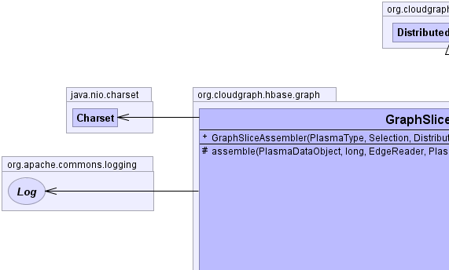
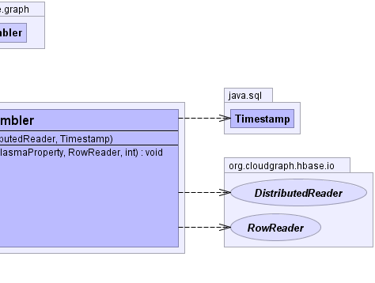

public class GraphSliceAssembler extends DistributedAssembler
Edges within a collection are "recognized" as members of a slice based on a binary expression syntax tree assembled from the path predicate describing the slice. While a path predicate may be quite complex resulting in any number of logical, relational or wildcard binary expressions, a single slice syntax tree is used to evaluate any number of edges within a collection. Where edge opposite graph nodes are found within the current row, an edge recognizer is used, but where edge opposite graph nodes are found "outside" the current row, a graph recognizer is used.
Since every column key in HBase must be unique, and a data graph may contain any number of nodes, a column key factory is used both to persist as well as re-constitute a graph. A minimal amount of "state" information is therefore stored with each graph which maps user readable sequence numbers (which are used in column keys) to UUID values. The nodes of the resulting data graph are re-created with the original UUID values.
EdgeRecognizerSyntaxTreeAssembler,
EdgeRecognizerContext,
GraphRecognizerSyntaxTreeAssembler,
GraphRecognizerContext,
GraphSliceSupport,
StatefullColumnKeyFactory|  |  |
distributedReaderroot, rootTableReader, rootType, selection, snapshotDate| Constructor and Description |
|---|
GraphSliceAssembler(PlasmaType rootType,
Selection selection,
DistributedReader distributedReader,
java.sql.Timestamp snapshotDate) |
| Modifier and Type | Method and Description |
|---|---|
protected void |
assemble(PlasmaDataObject target,
PlasmaDataObject source,
PlasmaProperty sourceProperty,
RowReader rowReader,
int level)
Populates the given data object target, recursively fetching
data for and linking related data objects which make up the
resulting directed graph.
|
assemble, assembleEdge, clear, createChild, createChild, getProperties, isExternal, reconstituteUUIDassembleData, createRoot, fetchGraph, getColumnValue, getDataGraph, linkpublic GraphSliceAssembler(PlasmaType rootType,
Selection selection,
DistributedReader distributedReader,
java.sql.Timestamp snapshotDate)
protected void assemble(PlasmaDataObject target,
PlasmaDataObject source,
PlasmaProperty sourceProperty,
RowReader rowReader,
int level)
throws java.io.IOException
DistributedAssemblerassemble in class DistributedAssemblerjava.io.IOException - if a remote or network exception occurs.target - the current data object targetsource - the source or parent data objectsourceProperty - the source (reference) propertyrowReader - the current row readerlevel - the current graph levelCloudGraph® is a registered trademark of TerraMeta Software, Inc. Copyright © 2014 - All Rights Reserved.